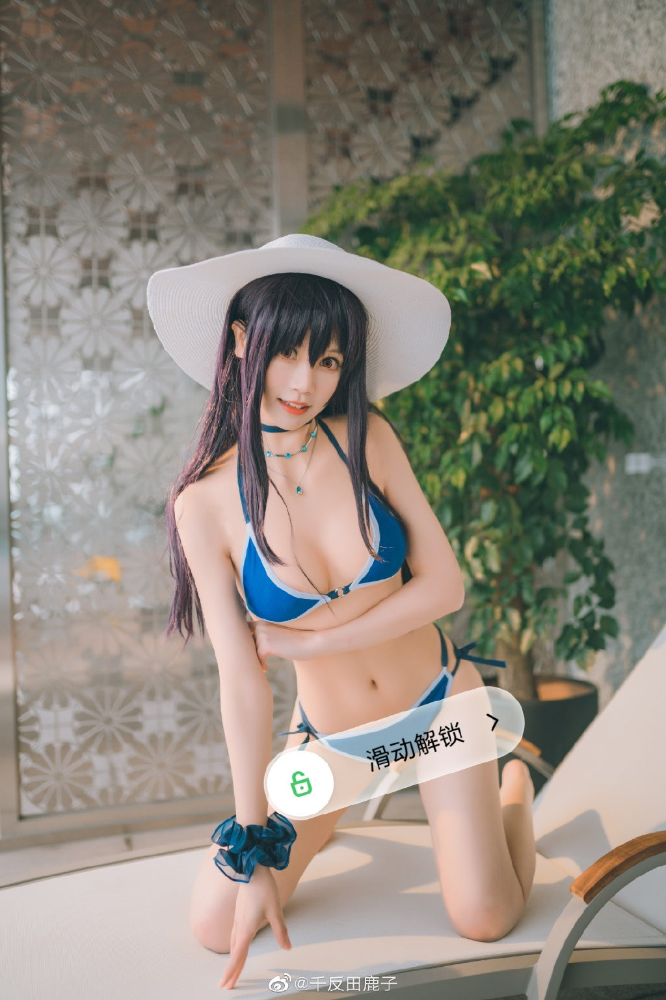

新年的第十天，来看看诗羽学姐吧 第一次自己做衣服，太难了[泪] 去年10月的照片了，虽然看着很冷，但还是球球大家卷 一下555 juan+guan 25号 jiu 5个倒霉蛋15p原图 出镜：本人 摄影：@会flying的fish 防炸小号：@_星黛鹿鹿  “我喜欢你” “真的吗” “假的，是超喜欢你” 出镜：本人 📷：@会flying的fish 场地：@晓米映画--原魔疯映画 之前那条被夹了一直开不了，重发一条555 zhuan+guan15号 jiu10个倒霉蛋12p无水印打码原图～【连着上次的一起就10份了快给我zhuan起来啊】 其他获取方式懂得都懂